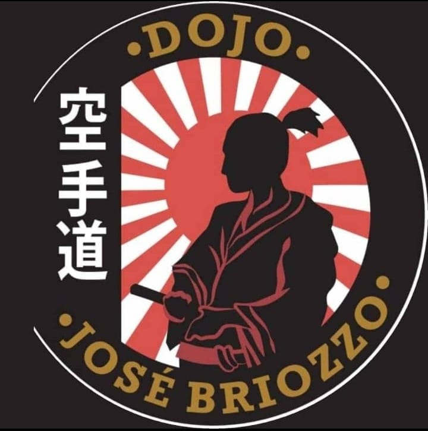
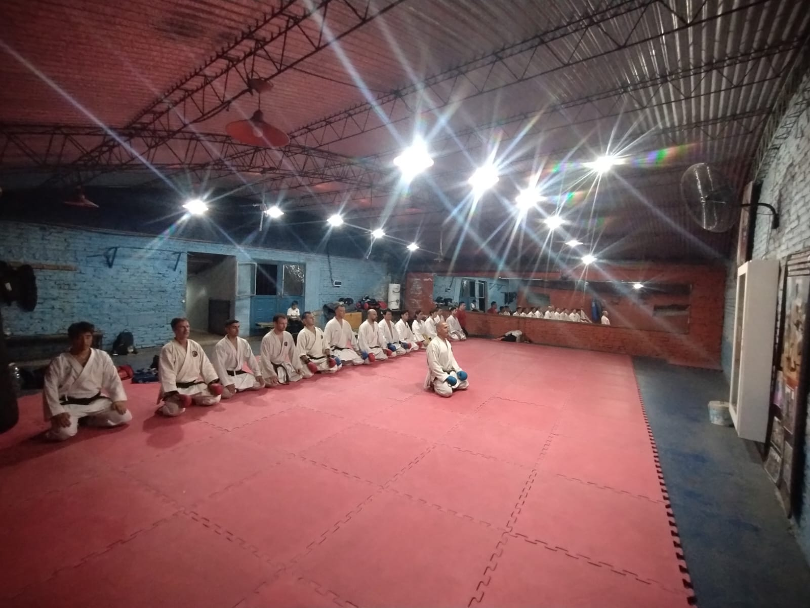
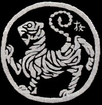

Dojo Jose Brossio
Karate Do Shotokan
Beneficion de la practica de Karate
El karate es un deporte que ofrece beneficios a nivel físico y mental, tales como
Nuestro Proposito
Nuestro proposito es enseñar, educar y guiar a nuestros estudiantes e instructores atravez de la ética ejemplar en Karate-Do, esto a través de la enseñanza y exámenes y por supuesto, competiciones tanto para jóvenes como para personas mayores por igual.
Motivamos a nuestros alumnos a superar sus limites fisicos y mentales en cada clase.
Las clases están adaptadas tanto para niños pequeños como para adolescentes y adultos que esten dispuestos a aprender.
En el Dojo se practica Karate teniendo en cuenta:
Sensei y los Dan del Dojo

Karate Do Shotokan
¿Que es el Karate?
“camino de las manos vacías"
La practica del karate es una disciplina que eleva el espíritu, donde la persona se potencia desde su interior con el conocimiento propio y la utilización adecuada de su propia energía. Hablar de karate es hablar de una filosofía de vida, de una manera de afrontar los retos diarios. Por eso cuando se educa a una persona en el karate, no solo se le enseña la técnica, también le transmitimos este mensaje, lo preparamos para la vida, fundamentados en un respeto y una moral ciudadana.
Kara = en su acepción mas simple, significa vacío absoluto, sin obstáculos. En sentido filosófico significa obsesión por ninguna cosa en el mundo. Es sinónimo de no obstinación. En las artes marciales el cuerpo físico se emplea como arma. En otras palabras, no se emplea ningún instrumento como arma.
Te = en japonés significa la mano del hombre, en nuestra disciplina equivale a la técnica
Do = significa camino, es decir, el camino que debe seguirse para alcanzar la perfección. Por lo tanto el karate-do es el medio que tiene por meta la unión del cuerpo físico y el alma en un plano de alto nivel. Podemos decir que karate es la forma japonesa de una técnica de luchas sin armas, con las manos y los pies libres, es un método de ataque y defensa que se apoya exclusivamente, en la utilización racional de las posibilidades que la naturaleza ha otorgado a nuestro cuerpo humano. Consiste en un conjunto de golpes con las manos y los pies, estos golpes se dan concretamente sobre puntos precisos y vulnerables del cuerpo del adversario en su forma y característica.
¿Que es Shotokan?
Shotokan, así se le denomina al tipo de arte marcial ideado por el maestro Gichin Funakoshi quien es reconocido como el padre del Karate moderno, se le considera de esta manera debido a que fue quien difundió esta disciplina y logró que se integrara al grupo de las artes marciales formativas japonesas, también conocidas como gendai budō. UE ES
Este estilo de karate, representa una fusión entre dos formas de practicar este arte marcial en la Isla de Okinawa. Por una parte se encuentra el Shorin Ryu y por otra el Shorei Ryu, también conocido como Naha-te.
Katas y Sistema de graduacion
Katas
Los katas están pensados para mejorar el equilibrio biológico del practicamente y con ello la homeostasis del cuerpo. Además de las evidentes ventajas que nos proporciona la práctica diaria de los katas, la parte psicológica es igualmente importante.
Esta practica contiene 26 Katas los cuales dividiremos en basicos y superiores, estos se van aprendiendo conforme el estudiante va avanzado en el arte y subiendo su clase.
Basicos
Superiores
Sistema de Graduacion
Los sistemas japoneses modernos distinguen dos clases de grados: Kyu (級) y Dan (段).
Kyu (級) significa literalmente «clase», «rango» o «grado». Los Kyu son los grados de principiante y se les asocia cinturones de colores.
Hay diez grados Kyu, los cuales se obtienen en orden descendente, es decir, se empieza en 10ºKyu (el más bajo) y se progresa hasta alcanzar el 1erKyu (el nivel más alto dentro de los grados de principiante)
Dan (段) significa «grado» o «paso/peldaño«. Los Dan son los grados dentro del nivel avanzado y conllevan el uso del cinturón negro
Al igual que los grados Kyu, también hay diez grados Dan, pero al contrario que los primeros, éstos últimos se obtienen en orden ascentente. De esta manera, el 1erDan es el más bajo de los grados dentro de los niveles avanzados, y el 10ºDan el más alto.